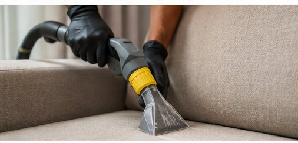

Découvrez aussi
Nos autres services
MathClean prend soin de toutes vos surfaces à Paris et en Île-de-France. Explorez l'ensemble de nos prestations de nettoyage.
Redonnez vie à votre canapé : shampoing en profondeur, détachage et désinfection des tissus, à domicile partout en Île-de-France.

Injection-extraction et brossage en profondeur : la mousse fait remonter la saleté incrustée.
MathClean prend soin de tous vos textiles d'ameublement à Paris et en Île-de-France : canapés en tissu ou en cuir, matelas, tapis et moquettes. Une seule équipe, une seule intervention, un matériel professionnel d'injection-extraction et des produits sûrs pour vos enfants comme pour vos animaux.
Tissu, microfibre, velours ou cuir : chaque canapé demande une méthode adaptée. MathClean intervient à domicile à Paris et en Île-de-France pour un nettoyage en profondeur qui élimine taches, acariens et mauvaises odeurs.
Particuliers, hôtels, bureaux et espaces d'accueil. Un canapé propre et sain valorise votre intérieur et prolonge la durée de vie de vos tissus. L'intervention dure généralement entre 1 h et 3 h.
Un canapé concentre poussières, acariens, taches et odeurs du quotidien. MathClean lui redonne fraîcheur et éclat grâce à un nettoyage en profondeur par injection-extraction, directement à votre domicile à Paris et en Île-de-France. Tissu, microfibre, velours ou cuir : nous adaptons la méthode et les produits à votre revêtement pour un résultat sans auréole.
Nos produits respectent les fibres tout en éliminant allergènes et bactéries — un vrai plus pour les familles, les enfants et les personnes sensibles. Redonnez plusieurs années de vie à votre canapé pour une fraction du prix d'un neuf, sans avoir à le déplacer.
Combien de temps sèche un canapé après nettoyage ? En général de 3 à 6 heures selon le tissu et l'aération ; nous optimisons le séchage pour réduire ce délai.
Traitez-vous le cuir comme le tissu ? Oui, nous avons des protocoles distincts : nettoyage et nourrissage pour le cuir, injection-extraction pour les tissus.
Enlevez-vous les taches anciennes ? Nous obtenons d'excellents résultats, même si certaines taches très anciennes ou ayant altéré la fibre peuvent ne pas disparaître totalement.
Nous nettoyons votre canapé avec une machine à injection-extraction professionnelle : elle pulvérise une solution nettoyante chauffée au cœur des fibres puis ré-aspire immédiatement l'eau chargée de saletés, d'acariens et de bactéries. Nos produits sont écologiques, éco-responsables et biodégradables, sans danger pour vos enfants et vos animaux, et adaptés à chaque revêtement (tissu, microfibre, velours, alcantara, cuir). Résultat : taches et auréoles éliminées, odeurs neutralisées, canapé sec en quelques heures et sans produit agressif.
Nous lavons votre canapé, vos fauteuils et vos chaises directement à votre domicile, sans frais de déplacement : Paris et tous ses arrondissements (75), Boulogne-Billancourt et Neuilly-sur-Seine (92), Saint-Denis, Montreuil et Tremblay-en-France (93), Vitry-sur-Seine (94), Versailles (78), Argenteuil (95), Évry (91) et Melun (77). Notre entreprise est établie au MathClean — 4 Rue Nicolas Copernic, 93290 Tremblay-en-France, et se déplace gratuitement dans toute l'Île-de-France.
Votre canapé ne bouge pas : c'est nous qui venons. Nos techniciens interviennent à domicile dans tout Paris (75) et l'ensemble de l'Île-de-France : Hauts-de-Seine (92), Seine-Saint-Denis (93), Essonne (91), Yvelines (78), Seine-et-Marne (77), Val-de-Marne (94) et Val-d'Oise (95). Notre équipe est notamment basée à Tremblay-en-France (93290), au cœur de la Seine-Saint-Denis, pour des interventions rapides dans tout le département.
Appartement haussmannien, pavillon de banlieue ou maison de campagne : nous protégeons les lieux, nettoyons votre canapé par injection-extraction et repartons en laissant un salon propre et un tissu assaini, sans aucun frais de déplacement. Découvrez votre département :
Nous passons un tiers de notre vie sur notre matelas. MathClean réalise un nettoyage de matelas à domicile à Paris et en Île-de-France pour éliminer acariens, taches, transpiration et mauvaises odeurs.
Familles, personnes allergiques, locations saisonnières et hôtellerie. Le séchage est rapide et le matelas réutilisable le jour même dans la plupart des cas.
Nous passons près d'un tiers de notre vie sur notre matelas, qui accumule sueur, acariens, cellules mortes et allergènes. MathClean assainit votre matelas en profondeur, à domicile, à Paris et en Île-de-France, pour un sommeil plus sain. Notre traitement anti-acariens et anti-taches convient particulièrement aux enfants, aux personnes allergiques et aux literies très sollicitées.
Nous traitons les deux faces pour éliminer un maximum d'allergènes, sans produits agressifs. Literie familiale, matelas d'enfant, chambre d'hôtes ou logement en location saisonnière : un matelas assaini, c'est une meilleure hygiène et une literie qui dure plus longtemps.
Le matelas est-il utilisable le soir même ? Le plus souvent oui : nous optimisons le séchage, comptez quelques heures d'aération selon les conditions.
Le traitement est-il efficace contre les acariens ? Oui, notre nettoyage haute température cible spécifiquement les acariens et les allergènes.
Faut-il déplacer le matelas ? Non, nous intervenons directement dans votre chambre, sur place.
Nous assainissons votre matelas avec une machine à injection-extraction chauffée qui atteint les acariens et allergènes logés en profondeur, sur les deux faces. Nos produits sont écologiques, éco-responsables et biodégradables, sans danger pour les enfants et les personnes allergiques, et notre traitement anti-acariens haute température élimine jusqu'à l'essentiel des allergènes. Taches et auréoles atténuées, odeurs neutralisées, matelas assaini et rapidement réutilisable — sans produit agressif ni humidité résiduelle.
Nous intervenons directement dans votre chambre, sans déplacer le matelas et sans frais de déplacement : Paris (75), Boulogne-Billancourt (92), Saint-Denis, Argenteuil et Tremblay-en-France (93), Vitry-sur-Seine (94), Versailles (78), Cergy (95), Évry (91) et Melun (77). Idéal pour literies familiales, chambres d'enfant, chambres d'hôtes et locations. Notre entreprise est établie au MathClean — 4 Rue Nicolas Copernic, 93290 Tremblay-en-France, et se déplace gratuitement dans toute l'Île-de-France.
Parce qu'un matelas ne se transporte pas facilement, MathClean se déplace gratuitement chez vous, partout en Île-de-France : Paris (75), Hauts-de-Seine (92), Seine-Saint-Denis (93), Essonne (91), Yvelines (78), Seine-et-Marne (77), Val-de-Marne (94) et Val-d'Oise (95).
L'intervention se fait directement dans votre chambre, en une à deux heures : traitement anti-acariens, élimination des taches et des odeurs, séchage rapide pour retrouver une literie saine dès le soir même. Découvrez votre département :
Tapis classiques, contemporains, en laine ou précieux : MathClean adapte sa méthode à chaque fibre pour un lavage en profondeur sans risque, à Paris et en Île-de-France.
Nous traitons aussi bien les tapis du quotidien que les pièces de valeur, avec des produits adaptés pour ne pas altérer les teintes ni les fibres.
Un tapis emprisonne poussières, allergènes et taches au cœur de ses fibres. MathClean réalise un nettoyage en profondeur de vos tapis à Paris et en Île-de-France, à domicile ou en atelier selon la valeur et la matière. Tapis contemporains, tapis de laine, kilims ou pièces précieuses : nous adaptons la méthode pour raviver les couleurs sans abîmer les fibres.
Un tapis bien entretenu traverse les années. Nous prenons soin des fibres délicates comme des tapis du quotidien, en éliminant acariens et mauvaises odeurs. Pour les pièces les plus précieuses, un traitement en atelier garantit un résultat optimal en toute sécurité.
Nettoyez-vous les tapis de valeur et en laine ? Oui, nous adaptons la méthode à la fibre ; les pièces précieuses peuvent être traitées en atelier pour plus de sécurité.
Le nettoyage se fait-il à domicile ? Selon le tapis, à domicile ou en atelier ; nous vous conseillons la meilleure option lors du devis.
Les couleurs risquent-elles de dégorger ? Nous testons systématiquement la solidité des couleurs avant tout traitement pour éviter tout dégorgement.
Chaque tapis a sa fibre : nous testons systématiquement la solidité des couleurs, puis nettoyons avec une machine à injection-extraction ou, pour les pièces précieuses, un lavage en atelier. Nos produits sont éco-responsables et biodégradables, doux pour la laine, la soie et les fibres synthétiques comme pour l'environnement. Détachage ciblé, shampoing en profondeur, rinçage maîtrisé et séchage contrôlé ravivent les couleurs, éliminent acariens et odeurs, et préservent la forme d'origine de votre tapis.
À domicile ou en atelier selon la valeur du tapis, nous intervenons à Paris (75) et dans toute l'Île-de-France : Boulogne-Billancourt et Neuilly-sur-Seine (92), Saint-Denis et Tremblay-en-France (93), Créteil (94), Versailles (78), Argenteuil (95), Évry (91) et Melun (77). Enlèvement et livraison possibles pour les pièces délicates. Notre société est basée au MathClean — 4 Rue Nicolas Copernic, 93290 Tremblay-en-France, et se déplace gratuitement dans toute l'Île-de-France.
Tapis d'Orient, berbère, laine, soie ou fibres synthétiques : nous intervenons à domicile dans les huit départements franciliens — Paris (75), Hauts-de-Seine (92), Seine-Saint-Denis (93), Essonne (91), Yvelines (78), Seine-et-Marne (77), Val-de-Marne (94) et Val-d'Oise (95).
Selon la fragilité des fibres, le nettoyage est réalisé sur place avec le plus grand soin, afin de raviver les couleurs sans jamais agresser la matière. Le déplacement et le devis sont gratuits dans toute la région. Découvrez votre département :
Faire appel à l'équipe MathClean sur Paris et dans les départements de la région parisienne, c'est la garantie d'un travail soigné et qualifié, pour tout type de nettoyage en Île-de-France.
Contactez un représentant MathClean pour obtenir votre devis gratuit dans les meilleurs délais.
📞 06 23 07 52 59MathClean prend soin de toutes vos surfaces à Paris et en Île-de-France. Explorez l'ensemble de nos prestations de nettoyage.